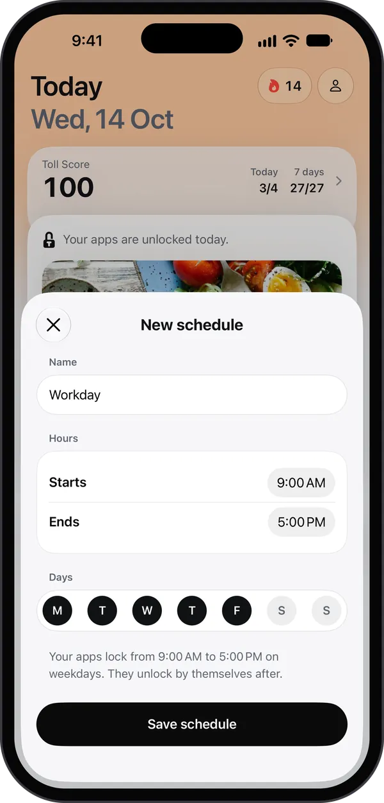

Schedules and limits
Lock apps on a schedule, or once they've had their minutes for the day. No photo needed; they unlock by themselves.
9 to 5A workday, the days you pick
10 PMThe night, until the morning
45mA day in the apps, then locked until midnight